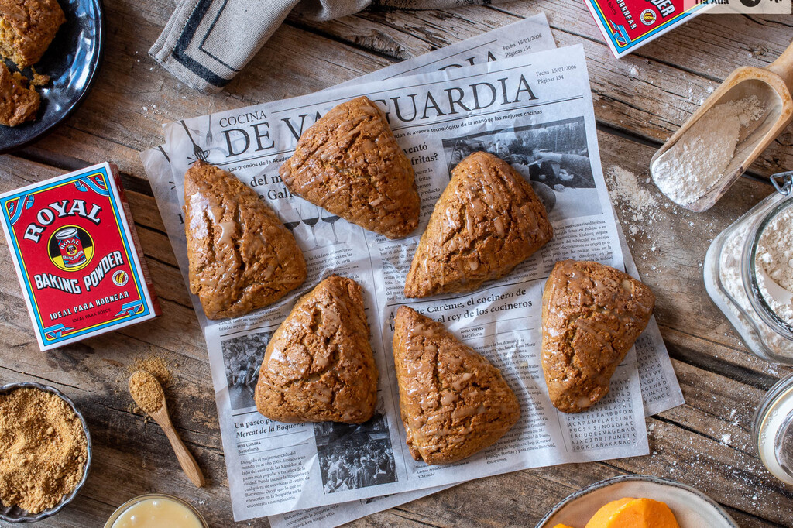
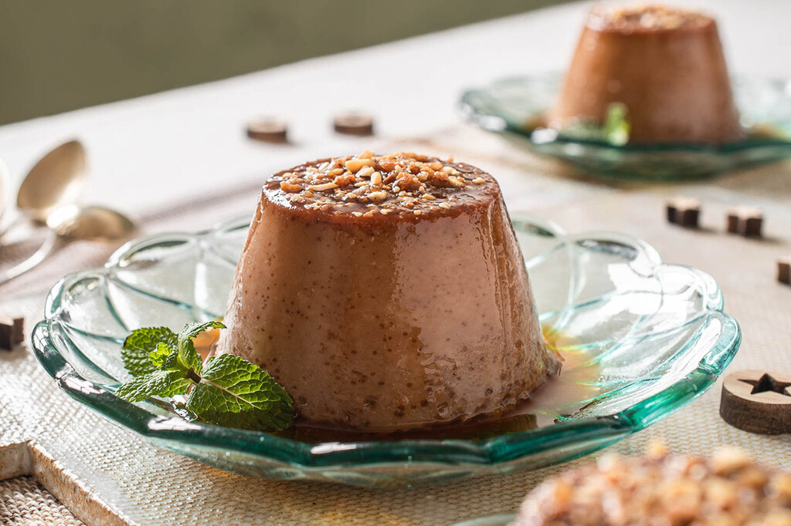

Receta scones

INGREDIENTES para 8 unidades
- 250 gramos harina de trigo: Harina de trigo
- 250 g Baking Powder Royal
- 10 g Sal una pizca
- Canela molida 1 cucharadita
- Jengibre molido 1/4 cucharadita
- Clavo de olor molido 1/4 cucharadita
- Nuez moscada molida 1/4 cucharadita
- Mantequilla muy fría 110 g
- Créme fraîche 30 ml
- Huevo M 1
- Puré de calabaza 110 g
- Azúcar moreno 100 g
- Esencia de vainilla 5 ml
- Mantequilla (para el glaseado) 25 g
- Miel (para el glaseado) 60 g
- Azúcar glas (para el glaseado) 110 g
ELABORACIÓN de la tortilla española
- En un recipiente amplio y hondo, mezclamos la harina con el baking powder Royal y todas las
especias, incluido un pellizco de sal. Cortamos la mantequilla en pequeños dados (es importante que
esté muy-muy fría) y la agregamos. Trabajamos la masa con las yemas de los dedos para integrar la
mantequilla sin calentar los ingredientes. Tenemos que obtener una especie de migas, no una masa
homogénea.
- Mezclamos la créme fraîche, el huevo, el puré de calabaza (bien escurrido), el azúcar moreno y la
esencia de vainilla. Incorporamos esta mezcla al recipiente anterior y la integramos con ayuda de un
tenedor, sin tocar la masa en exceso para que, como he comentado antes, no se caliente.
- Transferimos la masa a una bandeja de horno forrada con papel sulfurizado y, con las manos
enharinadas, formamos un disco de unos 3 cm de alto. Después lo cortamos en ocho porciones con un
cuchillo afilado y ligeramente engrasado. Separamos cada porción, dejando espacio entre ellas para
que no se peguen al crecer en el horno.
Receta flan de castaña

INGREDIENTES para 5 unidades
- Crema de castañas (un bote): 370 g
- Leche: 360 ml
- Huevo M: 3
- Caramelo líquido: 75 g
ELABORACIÓN de la tortilla española
- En un recipiente amplio y hondo, mezclamos la crema de castañas con la leche. Se integrarán mejor si ambos ingredientes están ligeramente tibios. Añadimos los huevos y removemos para que se mezclen bien los tres ingredientes. No hace falta añadir azúcar, pues la crema de castañas la lleva incorporada.
- Colocamos las flaneras en una fuente de horno y repartimos el caramelo líquido entre ellas. Después las rellenamos con la mezcla anterior.
- Vertemos agua caliente en cantidad suficiente para que cubra la mitad de las flaneras y llevamos la fuente al horno, precalentado a 180 ºC con calor arriba y abajo.
- Cocemos al baño maría durante 40 minutos. Dejamos enfriar antes de desmoldar y servir.